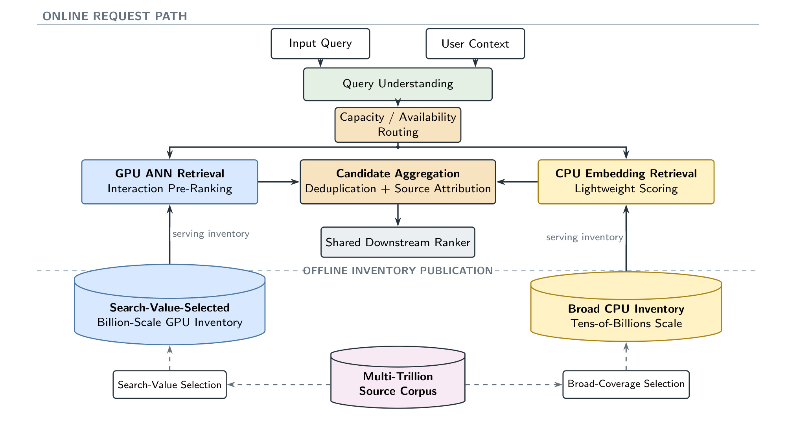
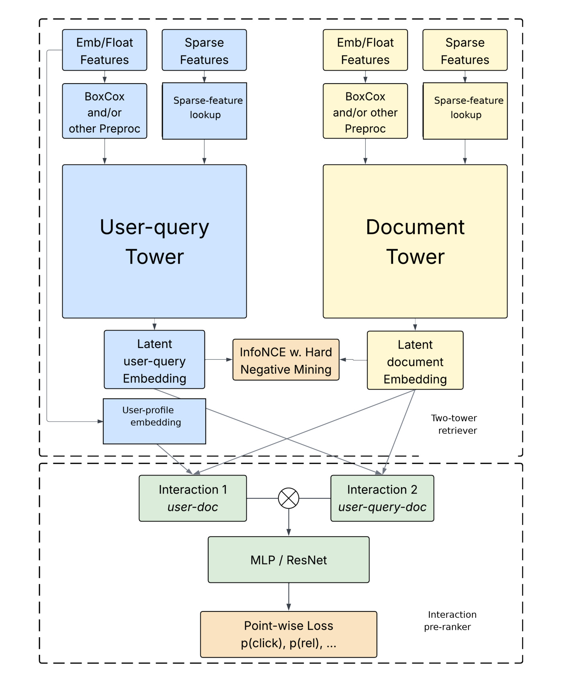
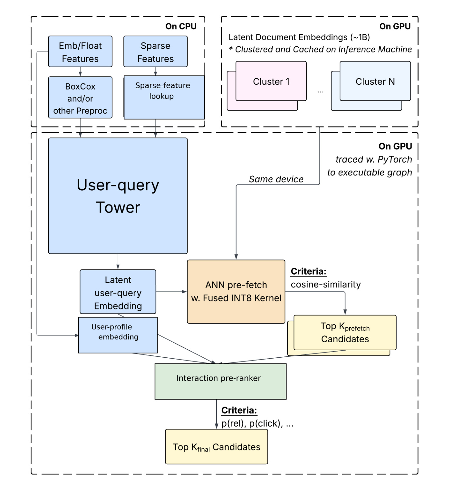
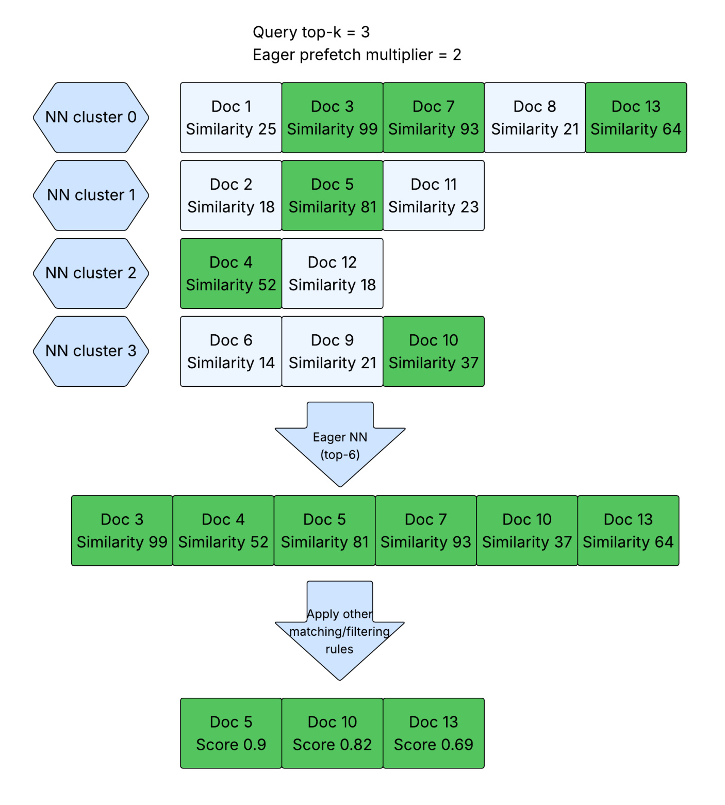
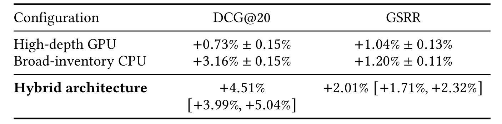
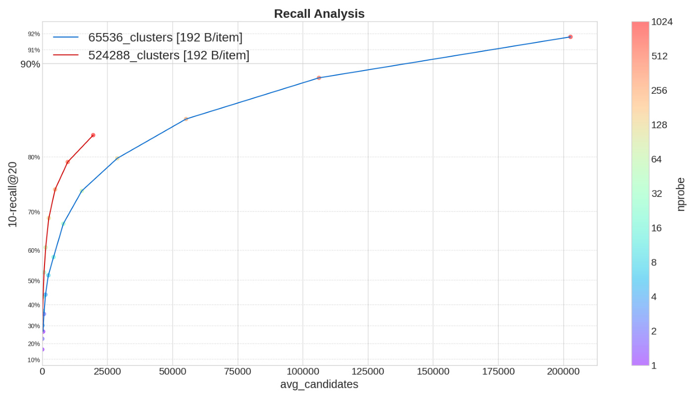
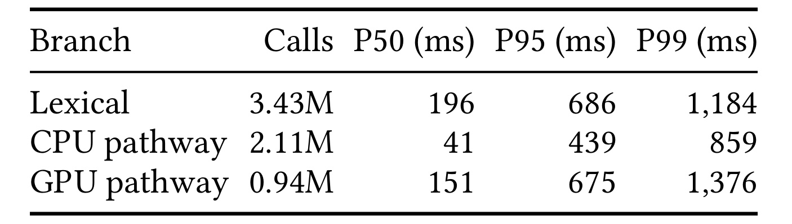
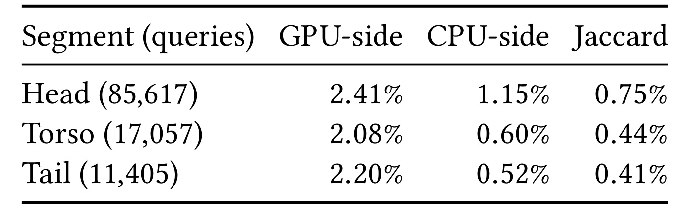
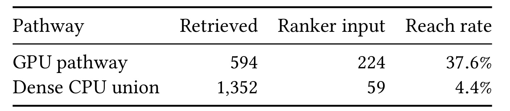
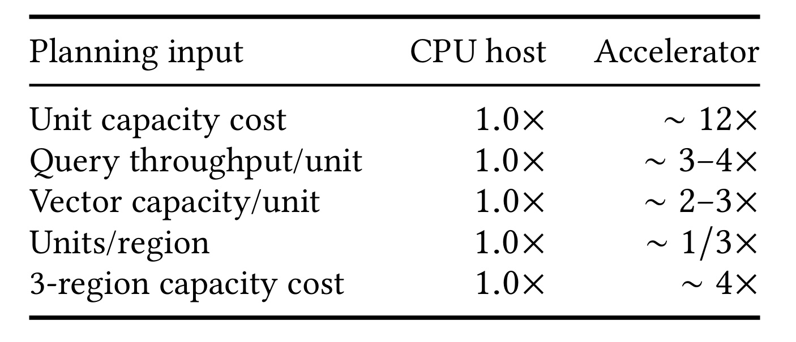

Meta-HybridRetrieval：超大规模个性化搜索中的 GPU–CPU 协同检索
论文：Hybrid GPU–CPU Retrieval for Personalized Search at Ultra-Large Scale
作者：Hao Fu、Jichao Sun、Baiting Zhu、Qiaoling Liu 等，Meta Platforms, Inc.
公开日期：2026-09-18（arXiv v1）；笔记日期：2026-09-22。
论文入口：arXiv:2609.21281；代码状态：未核验独立代码入口。PDF 中的 KDD ’27 排版和参考格式不构成会议接收证据，本笔记按预印本解读。
这篇论文讨论已经部署的搜索候选生成系统：将较强的用户交互建模放入较小的 GPU 在线池，将更广的内容覆盖留给 CPU，并在共享排序之前汇合。它的价值主要是服务边界、发布单元与生产证据，而不是提出一种全新的神经网络。
在万亿级用户生成内容上，丰富用户意图需要深度个性化交互，而大规模库存又要求在固定延迟和资源预算下保持广覆盖；完整在线库存放入 GPU 显存代价过高，CPU 则难以在延迟关键路径执行同样复杂的交互模型。
1. 背景和问题
搜索中的个性化并不等于在所有结果上统一加入一项用户偏好。同一个宽泛的发现式查询，可以因用户历史不同而优先返回海鲜或快餐；另一个高度具体的查询，可能只需要找出某家冷门餐厅的一篇评论。前者考验模型能否理解用户、查询和文档之间的非线性交互，后者首先考验目标内容是否仍在可检索库存里。再强的交互模型也无法给已经被库存选择器排除的文档打分；再大的索引如果只能进行简单相似度匹配，也可能难以识别真正适合当前用户的候选。论文将这种资源冲突概括为个性化与规模之间的矛盾。
这里需要区分三种规模。多万亿文档是上游内容源库，经过政策、质量、语言、新鲜度和重复内容等筛选后，才构成各硬件分支的在线库存。GPU 分支面向约十亿规模的精选池，CPU 分支面向大约二十倍的在线库存。一次请求还会经过质心选择和候选扫描，只读取在线库存的一部分。因此，“万亿级搜索系统”描述的是业务源内容的规模，不能改写成单次近邻搜索扫描万亿条向量，也不能把多万亿源库、数百亿在线库存、千级候选混为一项吞吐指标。这个区分决定了论文能够支持怎样的工程结论。
传统双塔能够把文档端表示提前算好，在线只需计算用户查询表示，再通过点积或余弦相似度检索。这种可分离打分适合大索引，因为每个候选的算力支出较低，文档表示也可以复用。但可分离性同时限制了交互表达：用户特征与具体文档特征之间的复杂条件关系，在单一向量相似度里很难完全呈现。将更深的交互打分提前到候选阶段，可以减少下游只在过窄候选集上优化的问题，却会增加每个候选的计算与特征访问开销。本文沿用双塔与 DeepFM 风格组件，把重点放在这些组件应在哪里执行、应该处理哪部分库存。
GPU 的长处是高吞吐稠密计算和高速显存访问，但高带宽内存不是廉价的无限容量存储。为了找出少量冷门文档，把庞大的低频向量长期放入显存，可能为容量而购买大量并未充分发挥计算能力的设备。CPU 主机的 DRAM 更适合承担大容量库存，但如果让每一条扫描候选都执行复杂的特征交互，则在线延迟和算力成本又难以控制。单一硬件层需要同时满足高表达与大库存，往往会在其中一个目标上妥协。混合设计由此具有合理性，但仅将硬件混用并不足以构成生产系统。
与把同一次近邻调用拆到 CPU 和 GPU 的协作加速不同，本文两条路径拥有独立模型与独立库存。CPU 库不是从 GPU 库扣掉之后剩下的冷内容，也包含很多热门文档；两个选择器和发布版本独立，包含关系可能随时间变化。一次请求可以执行其中一条，也可以两条都执行。这样的定义比“热门放 GPU、冷门放 CPU”的静态分层更准确，因为搜索价值并不等于推荐热度，一篇受众很小的教程可能对特定查询非常有用，而一条广泛传播的娱乐内容未必适合明确搜索意图。
用户生成内容还带来时间维度上的约束。新帖子持续进入，失效、删除和不符合政策要求的内容必须退出；用户历史和兴趣也不断改变。系统既要让语义表示与库存更新跟上内容变化，又要控制模型与索引之间的兼容性。论文中 GPU 按日发布配套模型和快照，CPU 通过基础回填与实时更新维持库存。这不是简单地比较谁更新更快，而是分别明确每条路径对新鲜度的业务要求、资源预算与发布策略。日级刷新是作者应用的选择，不能泛化成 GPU 检索只能按日更新。
生产系统的另一难点是离线效果不必然转化为线上收益。作者描述过一个语义模型前代：离线相关性改善，上线观看却退化。排查发现离线精确近邻和在线量化近邻并不一致，离线可用文本比在线丰富，下游过滤器仍按旧模型校准。这意味着向量本身不是完整发布单位。本文真正推进的环节包括兼容模型、ANN 工作点、特征和过滤器的联合发布，以及通过候选聚合接口让两个分支独立回滚。在推荐召回中，这同样关系到离线模型收益能否穿过召回、过滤、粗排和精排整条链路。
证据也必须与问题对应。低重叠候选说明两路没有完全重复工作，却不能证明用户更满意；更低扫描成本说明实现效率改善，却不能推出相关性不变；单卡服务快也不能代表用户看到结果快。本文分别报告整套系统实验、独立分路实验、线上分支延迟、候选结构和匹配容量方案，阅读时必须保留这些边界。对大模型应用而言，类似的深度与广度矛盾也可能出现在个性化检索增强生成和记忆搜索中，但论文没有评估答案正确率、生成延迟或智能体任务成功率，迁移应当作为后续研究假设，而不是本文已经证明的结论。
原文相关工作还给出一个重要定位：图索引、倒排量化和磁盘近邻库主要优化单个引擎的召回—成本前沿，它们与本文协同框架并不互斥。任一路都可以换用新的索引或内核，只要对聚合器维持相同候选契约。因此评估本文新意时，不宜要求它在一个公开近邻基准上打败全部索引；但也不能反过来把这些索引的最佳实验结果当成本文底层已具备的性能。架构适用性与组件性能是两个需要分别验证的问题。下游完整排序、查询理解训练、生成式检索和学习式请求选择也不在本文研究范围。这样的范围限制，使生产结果更容易解释，却意味着读者不能从论文中直接获得整套搜索平台的训练配方或最优路由算法。
2. 方法
2.1 独立库存与并行汇聚
系统先由查询理解提取语义、语言、意图以及可用用户上下文，再由容量与可用性控制决定启用哪些路径。这个控制并不是论文验证过的学习路由策略。两条启用路径并行运行，各自维护截止时间；它们，各自有截止时间，聚合器接受及时返回的候选，按文档标识去重并保留来源信息，然后交给共享排序器。库存选择与在线请求处理的关系见 Figure 1。

Figure 1 的下半部分是离线库存发布，上半部分才是在线请求链路。源库经过两种选择策略，得到以搜索价值为目标的 GPU 池和强调覆盖的 CPU 池，箭头指向各自检索节点，而不是把全部源库直接送进一个近邻服务。上半部分的分叉与汇合说明两条路径可以同时服务同一次请求；右侧 CPU 结果不必先通过左侧 GPU，左侧也不需要等待 CPU 完成才开始交互预排序。这个组织方式避免将两个召回计算简单串成更长的关键路径，但并不能取消聚合截止时间和尾延迟管理。独立 deadline 允许某一路超时之后继续使用另一条已经返回的结果，因而失败隔离也是架构的一部分。
图中候选聚合同时承担去重和来源归属，后者十分关键：如果去重时丢掉来源集合，就无法分析一个文档由哪几路共同命中，也无法建立后续曝光和行为归因。图示并未让聚合器承担复杂排序学习，它提供的是相对稳定的候选接口。GPU 可以升级交互模型，CPU 可以升级索引和扫描内核，只要满足候选标识、分数和来源约定，就不必让另一条路径同步重构。发布方面，GPU 将模型和索引快照配套发布，CPU 发布版本化质心和基础索引并接入在线更新，两路可以分别禁用与回滚。需要注意，这种独立演进并不意味着结果质量相互独立：共同的下游排序、过滤和请求分布仍然会影响两路候选的最终价值，所以独立发布能力不能替代整套系统实验。 若一路独立回滚，聚合器仍可保留另一条路径的候选，这也是该接口能支持生产渐进发布的重要原因。
2.2 高深度 GPU 联合模型
GPU 池选择的是搜索价值。内容刚进入时先检查语言、原创性与内容类型；首周根据早期互动排除垃圾和低价值内容；七天后结合类别、搜索用途、地点信息和时间衰减估计长期价值。冷门教程和本地指南可以绕过简单互动剪枝，新闻趋势则更快衰减；超过一年的内容中，常青池保留比例不到百分之零点一。模型输入端，查询塔把三百八十四维语义和一百二十八维用户画像形成五百一十二维稠密输入，再与稀疏上下文结合；文档塔接收稠密、类别及内容特征，输出一百二十八维检索向量。训练结构如 Figure 2。

Figure 2 上半部保持双塔可检索结构，下半部加入用户—文档以及用户—查询—文档交互。左右两塔分别处理各自稠密和稀疏特征，得到隐表示后，以对比目标形成近邻空间；随后画像和两侧表示共同进入交互模块，经过多层网络输出点击和相关性等任务预测。因而双塔负责让合适文档进入候选，交互模块负责在较小集合中区分更细的偏好。这两个角色如果分别训练，可能出现召回向量偏好与预排序偏好不一致；联合训练则让监督信号共同作用于表示，但并不保证最终空间没有目标冲突。作者使用任务权重选择工作点，相关性和互动目标可能具有不同数据噪声和商业含义，不能只根据损失下降宣称所有任务同时改善。
图中的用户画像除了参与查询表示，也直接进入交互打分，使个性化不局限于检索空间的一次压缩。这里的复杂度受到两次限制：先限制 GPU 库存，再用近邻召回限制交互模块所处理的候选数。对比训练使用其他会话文档作为批内负例，交互模型则利用曝光标签或后级排序蒸馏；同一会话中“相关但没有互动”的候选进一步作为困难负例。它们已经符合查询主题，因此更有机会迫使模型学习用户偏好。但没有互动可能来自展示位置或未被认真观看，并不必然代表不喜欢，论文没有给出完整的偏差校正消融。Figure 2 的架构支持更强表达，真正的线上收益仍需由后面的分路实验验证，而不能从箭头数量或网络深度直接推导。
原文式一把训练目标写成：
符号解释：总损失由检索对比损失、相关性回归的 Smooth L1 和互动预测的二元交叉熵组成；三个权重是控制任务贡献的超参数。监督来自搜索日志与相关性目标，权重需要反映各任务尺度，不能把数值较大的损失误解成更重要的任务。
符号解释：查询表示为 $q$，文档表示为 $d$，相似度函数为 $\operatorname{sim}$，温度为 $\tau$，指数相似度为 $h$。温度调节相近候选之间的区分强度，它只定义对比目标中的相对竞争，并不是线上概率校准。
符号解释：批大小是 $B$，第 $i$ 个查询的正例是 $d_i^+$，其他会话 $j$ 提供负例集合 $D_j$。分母让正例与跨会话文档竞争，目标推动正例相似度相对上升。跨会话负例便于批量训练，却可能包含语义相关文档；原文另加会话内困难负例，但未给出独立编号公式，本笔记不补造额外损失结构。
符号解释：第 $t$ 项任务的预测值为 $\hat p_t$，线上任务权重为 $\lambda_t$，最终价值分数为 $S_{\mathrm{final}}$。它区别于训练损失权重：前者决定预测如何融合成排序工作点，后者决定训练梯度如何混合。作者可按流量分段调权而不重训，便于实验不同相关性与互动权衡，但改变分数后仍应检查过滤阈值和排序分布兼容性。
2.3 加速器驻留服务
GPU 路径沿用 SilverTorch 风格服务，将近邻搜索、模型推理和预排序留在加速器上。文档向量与交互所需特征尽量不在中途搬回 CPU；稀疏嵌入表仍放主机内存，通过 PCIe Gen5 按需访问。模型和候选索引配套发布，每日训练更新与容量配置独立，Figure 3 给出在线执行顺序。

Figure 3 左上角保留 CPU 特征预处理与稀疏查表，右上角是按簇组织并缓存于推理设备的文档隐向量。查询塔生成在线表示后，融合整数内核执行近邻预取，输出较大的预取候选集合；随后用户画像、查询表示和文档候选共同进入交互预排序，最后按相关性与点击等预测形成更小的最终候选集合。这里“最终”只指该分支输出，并不是面向用户的最终搜索结果。它们仍需进入前述共享聚合与排序。这样划分可以在大量粗选候选上使用便宜距离运算，在少量保留候选上执行昂贵交互，同时减少两段之间的传输与中间结果物化。
融合八位整数内核将量化与距离计算放到同一个操作中，目的是减少内存带宽与中间表示开销。图中仍存在 CPU 区域，说明“GPU 路径”不是整条请求零主机参与，更不是所有模型参数都常驻显存。稀疏表规模可能超过显存，把稀疏参数留在主存、把稠密计算留在设备，是内存层次上的另一种分工。它使深交互有机会满足服务预算，但访问稀疏表的代价、设备排队与分支编排仍可能影响线上尾部。论文单卡压测使用 MI300X，每卡约一百五十到二百查询每秒，模型服务百分之九十九分位约三十到四十毫秒；这个测量排除了网络、聚合和下游排序，不能替代稍后报告的生产分支时延。联合训练图与在线执行图配合来看，训练中的负例构造和损失不会在线重算，而模型表示、近邻工作点与交互预测会保留。 文中每查询计算量约百亿浮点操作、峰值约其两倍，进一步说明该分支预算包含实质交互计算，而非只做向量查找。
2.4 广库存 CPU 检索
CPU 索引从词法索引中解耦，独立保存数百亿级公共文档向量与少量词法信号，以免向量扫描继续受逐词倒排抽象和词法服务容量约束。独立文档理解服务消费静态池及实时创建、更新流，生成向量后写入 DRAM 索引。质心训练也从索引构建中分离，由分布式训练器每日生成版本化质心，服务分片直接加载，避免每个分片重复训练。模型侧采用共享微调 XLM-V 骨干的双塔，以双向对比学习生成三百八十四维多语言文档表示，个性化主要留在查询端；向量以点积交互，明确放弃 GPU 路径的深跨特征计算。查询先选质心，再扫描对应列表，执行次序见 Figure 4。

Figure 4 用最终请求三条近邻、预取倍数为二的例子，展示先扫描所选簇、得到六个高相似度候选，再执行其他匹配与过滤规则。绿色表示在预取阶段进入集合的文档，之后部分候选被约束过滤，只剩最后三条。这个例子说明预取列表是后续处理的动态跳跃列表，而不是要求每次拿到一个文档就交错执行所有布尔规则和向量计算。旧的按文档推进方式会在不同倒排列表和文档标识之间跳转，形成随机访问与缓存失效；先按列表连续扫描，则把昂贵距离计算集中到局部性较好的内存路径。最终候选可能按后续分数重新组织，所以图中相似度顺序和最终分数顺序不应被要求完全一致。
另一项优化是绕过逐命中文档的迭代器虚函数调用，直接将原始向量批量送入 AVX-512 列表扫描内核，减少调度和指针追踪。这与提前评估互补：前者降低每条向量扫描的运行时开销，后者改变访问顺序并压缩需要进入后续复杂约束的集合。较多质心又能缩短单个列表，在相近召回质量下减少扫描候选。三者都服务于广库存的低单位成本，但预取预算太小仍可能让后续过滤后候选不足，质心过细也会增加训练、发布和粗筛负担。因此作者把质心训练单独分布式化，并通过实际召回曲线选择工作点。本文没有逐项公开这些超参数在所有业务上的最优值；可迁移的是将计算布局、索引版本和质量工作点一起评估的做法。 图中被保留的文档编号并不连续，顺序扫描是内存访问策略，不要求最终结果按编号或原列表顺序输出。
3. 实验结果
3.1 在线效果与指标口径
主要数据来自生产搜索日志，不是公开离线推荐基准。完整系统实验与旧的全 CPU 配置比较，使用持续账号级随机分配，每组每天是百万级账号量，报告连续九天、每天等权的相对提升。账号在不同天可以重复，不能把会话或天当成完全独立样本。相关性采用模型打分的 DCG@20，并非人工标注真值；行为指标 GSRR 用具有实质互动的会话比例补充相关性视角，原文定义如下。
符号解释：会话为 $s$，该会话事件集合为 $\mathcal E_s$，事件强度为 $v(e)$，事件类型对应阈值为 $\tau_{\operatorname{type}(e)}$，指示函数在存在达标事件时为一。例如足够长观看或明确正向操作可以使会话达标；它不是所有点击的简单平均，也不是单独的长期留存概率。
符号解释：$\mathcal S$ 是符合统计条件的搜索会话集，分母是会话总数。指标衡量发生至少一个实质事件的会话占比。事件阈值决定什么被认定为有效互动，因此跨产品比较时需要统一会话和阈值定义。
符号解释：处理组均值为 $\mu_t$，对照组均值为 $\mu_c$。后面的提升全部采用这种相对口径，不是绝对百分点变化。Table 2 分别列出整体系统与两个分支的生产结果。

Table 2 最后一行是应优先关注的主结果：完整混合架构相对旧 CPU 系统的模型相关性提升百分之四点五一，保守百分之九十五区间为正三点九九到正五点零四；有效互动会话率提升百分之二点零一，区间为正一点七一到正二点三二。这些数值来自相同九天窗口的每日等权平均，支持该生产工作点总体有效。作者以每天区间两侧中较大的半宽作为当天不确定性，再平均九天半宽，借助柯西—施瓦茨界允许任意跨日相关，不将标准误直接除以三。九天每一天的区间也均在零以上，因此正向结论不只依赖某个异常高收益日；但公开汇总依然无法替代原始账号级样本复算。
前两行来自不同时间段及同期生产对照。GPU 的七天实验得到相关性正零点七三、有效互动正一点零四，区间半宽分别零点一五和零点一三；CPU 在禁用 GPU 的九天评估中得到正三点一六和正一点二零，半宽零点一五和零点一一。不能把两行相加预测第三行，也不能相减求所谓协同增益。GPU 处理同时改变加速器服务、近邻工作点和交互打分；CPU 处理同时包含轻量个性化与相关性过滤更新，因此结果识别的是完整处理配置，不是单个硬件、某层网络或库存增大的独立因果贡献。对工程判断最有用的结论是各自发布包在相应控制下有正收益，整体组合也在单独实验中有效，而不是某个子模块已经被严格消融证明。 表中区间均为相对提升尺度，不能当作指标绝对值的上下界；缺少对照组基线值，也无法从这张表恢复绝对会话率。
3.2 CPU 扫描与聚类效率
作者报告专用索引与提前评估把检索阶段计算减少百分之八十九点四五，约等于九点四八倍。另一个问题是库存扩大后怎样控制列表长度：旧流程在分片内训练六万四千级质心，扩大到五十一万二千级后串行构建过慢，因此采用独立分布式质心训练。Figure 5 比较两个索引随探测簇数变化的候选扫描前沿。

Figure 5 横轴是平均候选数，纵轴标记为近邻召回指标，右边颜色对应探测簇数，从一到一千零二十四。蓝线对应六万五千五百三十六簇，红线对应五十二万四千二百八十八簇，二者图例注明相同的每文档表示字节数。在曲线共同覆盖的召回区域，红线明显更靠左，意味着更细的划分能在相近召回下扫描更少候选，而不是仅仅把同一条曲线上的阈值调低。蓝线延伸到更高候选预算和更高召回区域，红线没有展示完全相同的高召回端点，因此不能据此声称红线在所有可能预算上都占优，更不能拿不同探测簇数的两个点直接进行质量等价比较。曲线支持的是在展示的工作区间内改善扫描—召回折中。
线上进一步评估选定的五十一万二千级质心与二百五十六个探测簇，十五天实验中 CPU 使用减少百分之六十三点五，未检测到 GSRR 退化。这个表述弱于证明两者严格等效，因为没有公开对应等效性检验与功效门槛。前述百分之八十九点四五与这里百分之六十三点五对应不同基线，并且各自包含固定开销，不能相乘生成一个夸大的总降本比例。CPU 使用也不是完整搜索成本，更不是整个混合系统的机器预算。可复用的实验方式是先看固定表示下的召回前沿，再选择工作点进入长期在线测量，同时观察用户指标；仅有离线扫描次数降低，还不能说明线上资源和质量同时满足发布要求。 粗筛质心的数目与实际探测数需要区分：前者决定索引分区粒度，后者决定单次请求访问多少分区，两个旋钮共同影响扫描负担。
3.3 生产分支时延与单卡压测
生产延迟基于连续七天帖子检索的分支边界日志，使用采样权重，并把同一次 CPU 检索调用所属的稠密工作合并后再计算分位数。这既不是先对每个来源算分位数再求平均，也不包括短视频与其他视频场景。结果如 Table 3。

Table 3 的调用量分别约为词法三百四十三万、CPU 稠密二百一十一万、GPU 九十四万。CPU 的中位数、九十五分位与九十九分位分别为四十一、四百三十九和八百五十九毫秒；GPU 分别为一百五十一、六百七十五和一千三百七十六毫秒；词法分支分别为一百九十六、六百八十六和一千一百八十四毫秒。CPU 在三个分位点都比词法快，GPU 在前两个分位点稍好于词法，而九十九分位更高约百分之十六。若只报道 GPU 模型服务的三十到四十毫秒，就会遗漏最需要运营关注的生产长尾。这张表体现的是包含分支内部编排的墙钟执行时间，而不是裸矩阵乘或单次内核速度。
这些数值仍然没有覆盖完整搜索请求：查询理解、分支边界外网络、候选聚合、后续排序及客户端呈现都被排除，不能直接当成用户端响应时长。CPU 和 GPU 候选预算也不同，GPU 在分支内执行交互打分并送出更多精排候选，不能将表中延迟差全部归因于设备效率。表里调用量不同同样提示两路并非完全相同请求集合，容量和可用性控制会影响启用范围。单卡吞吐压测与这里生产分位来自不同测量边界，论文没有提供把两者逐项对齐的排队分解。因此复现时应同时埋点设备服务、分支入口出口和整条请求，定位尾延迟究竟来自模型、特征访问、调度还是超时策略，再决定应优化哪一个环节。 原文没有给出可比的CPU单主机模型服务延迟，因此不能从这一生产表构造CPU与MI300X单机性能比，调用分布也不支持这样的换算。
3.4 候选互补与进入精排的比例
作者只在两条稠密路径都执行的请求上计算集合重叠，CPU 集合是三个稠密来源的并集。按查询热度分组后先对每个请求算比例，再在组内平均，并非把所有请求文档合并成一个大集合。附录式五与式六为：
符号解释：第 $i$ 个请求的 GPU 集合为 $G_i$，CPU 稠密并集为 $C_i$；交集大小除以各自集合大小得到两种包含率。分母不同使两侧比例不同，它们不能被当成互相矛盾的同一重叠率。
符号解释：$J(i)$ 为该请求的 Jaccard 相似度，以并集为分母。它描述候选集合的结构冗余，不含排序位置、曝光或用户动作。三天结果见 Table 4。

Table 4 中头部为热度最高十分位，中部为第二到第五十分位，尾部为第六到第十十分位，对应请求数约八万五千六百、一万七千和一万一千四百。GPU 侧包含率分别百分之二点四一、二点零八和二点二零，CPU 侧更低，Jaccard 分别百分之零点七五、零点四四和零点四一。两侧包含率都低，支持“两个稠密召回分支提供不同候选”的结构判断。因为模型、在线库、筛选器和候选预算都不同，这种差异是整个路径造成的，不能单独解释成 CPU 找长尾、GPU 找热门，更不能从低交集反推出两个底层库存完全不相交。库存可以重叠很大，而对同一查询返回的顶部候选仍然明显不同。
作者还用独立七天窗口复查，GPU 侧包含率约百分之二点三二、二点零七和二点一五，与主窗口各组差异不超过零点一三个百分点，这增强了结构观察的时间稳定性，但不构成行为收益的因果复验。统计排除了只执行一路的请求，因此也不能推广成所有流量的冗余率。尤其低重叠本身既可能来自有用的互补，也可能来自一条路径提供很多弱候选；判断用户价值要回到整体及分路随机实验。若将这一指标用于线上容量管理，应同时记录各路进入排序、最终曝光和有效互动贡献，才能区分“产生了不同东西”与“产生了有用东西”。论文给出的下一层证据是精排入口的候选流量，而非最终曝光归属。 宏平均使每个合格请求先获得同等权重，而不是让返回候选更多的查询自动占据更大权重；换成全局集合比率，得到的统计量会不同。

Table 5 中 GPU 平均召回五百九十四条，送入共享排序二百二十四条，通过率百分之三十七点六；CPU 稠密并集召回一千三百五十二条，送入五十九条，通过率百分之四点四。通过率基于未四舍五入计数计算，所以不要用展示整数复算后要求小数逐位一致。它反映两套不同预算、不同过滤阶段的流水线，不能以两项百分比之比宣称 GPU 候选质量提升数倍。GPU 已执行深交互预排序且面向精选池，CPU 从更广库存出发并使用轻过滤，两者到达该观察点前的选择强度就不相同。共享排序入口是中间阶段，也不能把二百二十四与五十九直接视作最终用户看到的结果数量。
附录进一步报告去重后入口平均约七百八十一条，其中 GPU 独占二百零九、稠密 CPU 独占四十七、词法 CPU 独占五百、跨组重叠二十六，份额约百分之二十七、六、六十四、三。各组均值独立取整，展示数相加可能与总计相差一，并不代表数据自相矛盾。这组结果同时提醒我们：论文虽然聚焦双稠密路径，实际系统还有重要的词法候选来源。去重前后集合与来源组定义应保持一致，不能把 CPU 稠密并集混称为所有 CPU 候选。作者没有公布最终前二十结果的来源曝光或逐来源互动收益，因此目前能认定的是两路在自身打分后仍向共享排序贡献不同候选，不能认定各路贡献了多少终局业务价值。 词法来源在该入口仍占多数，提醒读者实际生产搜索不是只靠两条向量通道；本文稠密通道的贡献应在这一既有生态中理解，不能忽略词法召回。
3.5 匹配容量规划及其经济边界
容量比较是另设的相同广向量工作负载：二百五十六维标量八位量化表示、相同区域吞吐要求、三个地区完整副本。它不等同于已部署 CPU 模型的三百八十四维表示，也不是直接比较现有 GPU 分支和 CPU 分支机器账单。

Table 6 以 CPU 主机归一为一，单台加速器容量成本约十二倍，每单位查询吞吐约三到四倍，每单位向量容量约二到三倍。最终两种方案均由存储而非吞吐下限决定设备数量，加速器每区域数量约为 CPU 的三分之一，结合单设备成本后，三地区容量方案约为四倍。这个结果解释了为什么把所有广库存都搬到显存不一定经济：虽然每台加速器快，也能装更多向量，但单台价格的增幅高于所需数量的缩减。这里比的是“满足给定表示与复制条件需要多少容量成本”，没有比较更深交互模型带来的用户收益，也没有计算每单位商业价值的成本。
该方案排除共享排序、网络、实际部署的十亿规模 GPU 路径和利用率相关开销；文中也没有证明两种实现达到相同延迟目标或召回质量。因此不能写成混合系统总拥有成本降低四倍，也不能宣称 GPU 向量检索天然贵四倍。CPU 方案还保留适量库存余量，使相对存储最小化 CPU 配置的比值较保守。原文只公开归一化规划输入，缺少绝对机型配置、利用率与完整计费，读者可以审查比例逻辑，却不能直接据此制作采购预算。对于部署决策，合理用法是先固定表示、库存、吞吐和容灾策略，判断约束究竟来自容量还是计算，再讨论硬件放置；如果业务还要求不同的新鲜度和尾延迟，就需要把这些条件加入新的对照规划。 同样三个地区复制使相对比值中副本数抵消，但这不意味着容灾免费；它只表示双方在此次比较中承担了相同数量的完整副本。
4. 总结
本文最值得保留的工程观点是：把候选契约做成长期稳定边界，让模型深度与库存广度分别演进。GPU 分支承担复杂交互并尽量保持候选在设备内，CPU 分支通过专用索引、连续扫描和细粒度质心承担宽库存；两者以独立版本、截止时间和回滚策略对接共享排序。这比单纯增加一个召回通道更系统，因为库存选择、模型、表示、近邻参数和过滤共同成为需要被验证的发布包。前代模型离线变好而线上退化的经验尤其具有迁移价值：在比较新模型前，必须先确认离线评价对象与线上执行对象真的相同。
对推荐系统，优先可迁移的是“精选池上的强交互”与“广库存上的低成本打分”组合，而不是照抄文中的设备数或候选比例。业务中如果长尾内容价值主要取决于是否被召回，而高价值流量又确实需要更深的用户交互，这样的分工值得实验。对个性化检索增强生成，可以设想深交互路径优先寻找高相关上下文，广路径避免冷门事实被记忆池淘汰；但必须重新评估答案忠实度、上下文预算和生成阶段延迟，本文线上搜索指标不直接证明生成任务收益。迁移推断的依据是资源冲突相似，而不是任务效果已经等价。
局限至少有四方面。第一，线上日志、完整配置和生产数据不可公开，外部只能验证论文公式和汇总逻辑，不能独立重跑同规模实验。第二，分路发布同时改变多个组件，缺少隔离模型、库存、近邻精度与硬件影响的因子实验，因此不宜把提升全部归给深交互。第三，相关性主要由模型评分，可能继承评价模型偏差，而有效互动是代理目标，也不能覆盖长期满意度的所有方面。第四，候选多样性停在共享排序入口，没有来源归属的最终曝光与行为，尚不清楚新增候选最终帮助了哪些人或创作者。第五，GPU 生产长尾高于词法分支，说明吞吐和单卡低延迟没有消除服务编排风险。第六，容量规划没有覆盖完整系统成本与利用率，更没有质量等价实验，经济结论只能保持在指定负载范围内。
后续最应跟进三项验证。首先，在固定下游排序及过滤版本下随机开启和关闭路径，记录质量、deadline 命中率和容量成本，再研究请求级学习路由；否则仅用历史日志学到的路由可能继承旧容量控制偏差。其次，补齐从召回来源、去重、排序位置到曝光和实质行为的关联，分用户、语言与创作者群体分析收益，避免总体改善掩盖部分人群覆盖下降。最后，建立同时约束召回、新鲜度、尾延迟和复制开销的匹配容量实验，把模型服务时间、分支时间和完整搜索时间分层测量。这样才能知道下一轮投资应该提高交互表达、扩大库存、优化扫描，还是处理线上调度。
我的判断是，这是一篇生产系统组合设计与证据口径管理都较有参考价值的工作。它展示了在作者业务条件下可行的深度—广度分工，并给出正向整体实验，但没有证明唯一最优架构，也没有把所有组件收益分解干净。阅读时应将完整九天实验作为总体价值锚点，把分路实验作为各自发布范围内的正向证据，把低重叠和成本规划作为解释架构合理性的辅助证据。保持这种层次，才能把可迁移的系统原则带走，而不把局部测量放大成普遍性能承诺。